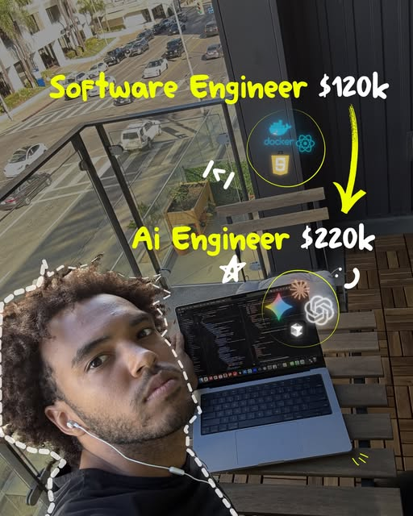

Instagram Reel

RAG Interview Question: Ai Theory vs actual AI engineer
video transcript (enriched by ClaudeClaw)
Summary
[CAPTION]
RAG Interview Question: Ai Theory vs actual AI engineer
Comment "Interview" to get a personalized learning plan, weekly coaching from ai engineers & recruiters, + everything you need to land and pass a job interview in the next 90 days.
[VIDEO]
Same question to you both.
[CAPTION]
RAG Interview Question: Ai Theory vs actual AI engineer
Comment "Interview" to get a personalized learning plan, weekly coaching from ai engineers & recruiters, + everything you need to land and pass a job interview in the next 90 days.
[VIDEO]
Same question to you both. How would you build a rag pipeline in a production environment? This is gonna be easy. Well, first you ingest your documents, chunk them, create embeddings, store them in a vector database, retrieve the relevant chunks, then pass them into an LLM to generate the answer. Same foundation, but in production, I'd start with the data and retrieval requirements first. What documents are we indexing? How frequently do they change? What queries are users making? Then I'd build ingestion, chunking, embedding, indexing, retrieval, re-ranking, generation, and evaluation as separate components so I can measure and improve each one independently. Now the users are complaining that the RAG system keeps giving confident answers with the wrong information. What would you do? I'd improve the prompt and maybe increase the number of chunks we retrieve. Well first I'd figure out whether it's a retrieval failure or a generation failure. I'd log the query, retrieve documents, relevant scores, context sent to the model, and the final response. If the retrieval is bad, I might change chunking and add metadata filters, hybrid search, query writing, or re-ranking. If retrieval is good but the generated answer is bad, then I'd work on the generation prompt, citations, or force the model to abstain when the context doesn't support an answer. Alright, traffic just went up by 10x, now latency and cost are killing us. Use a faster model and cache the responses. Possibly, but I'd profile the pipeline first. Embedding, vector search, re-ranking, and generation all have different latency profiles. I'd cache repeated queries or retrieval results, batch embeddings during ingestion, limit unnecessary context, run independent retrieval calls in parallel, and route simpler requests to cheaper models. If I gave you our documents and API access right now, could you build this? I probably need to look up implementation first. I've actually already built one. I can build the repo and show you. You're hired. Where'd you learn all this? Thanks. I joined this AI engineering community. They have a full learning roadmap, projects to put on my resume, and daily calls with working AI and machine learning engineers. If you want to join comment interview, I'll send it to you. I hate you.
View original on Instagram Reel →